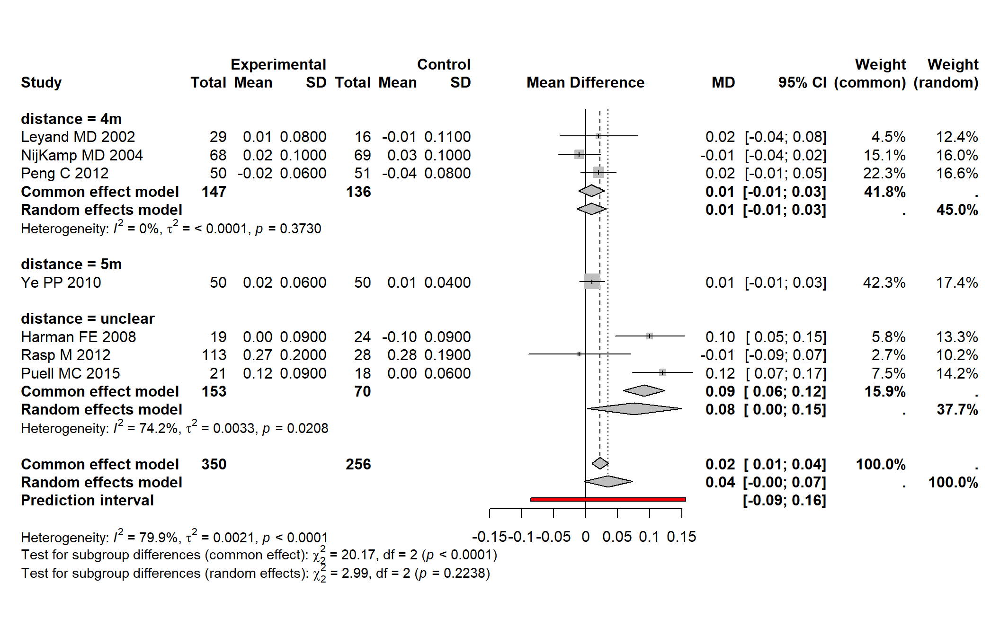
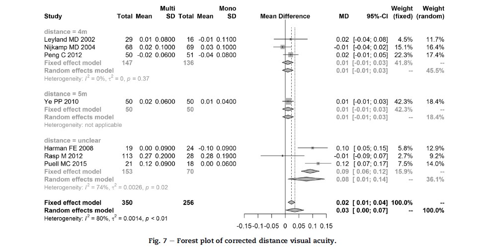
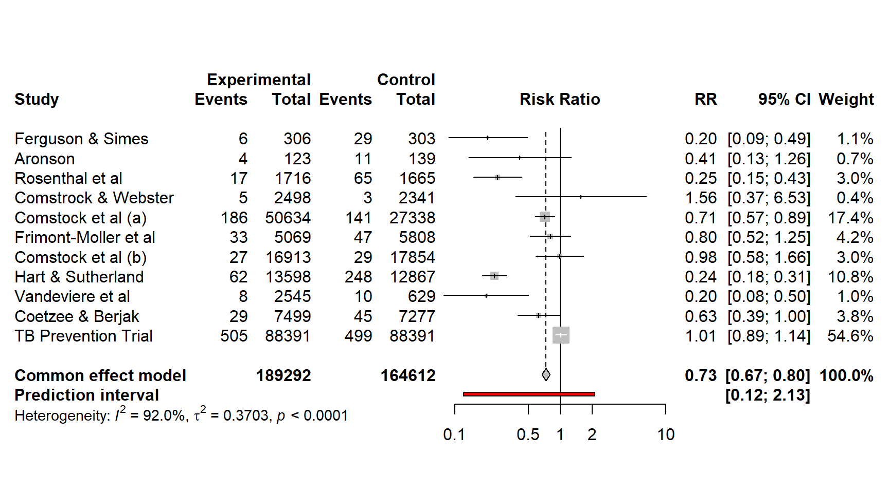
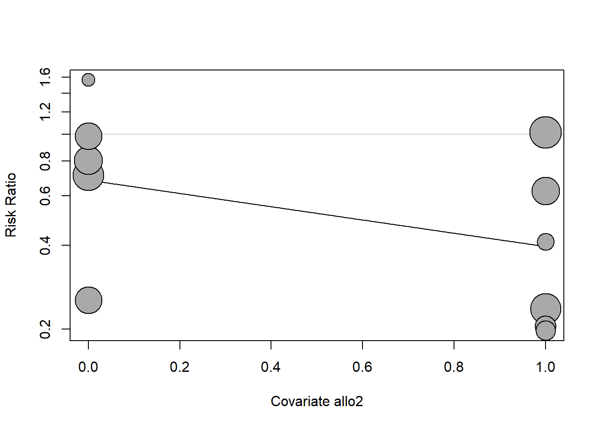
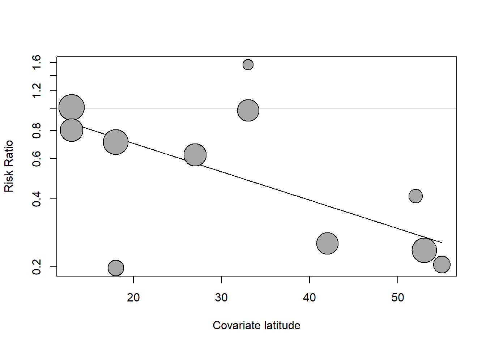

효과크기분석 결과 각 연구 간 효과크기의 이질성(heterogeneity)이 상당한 수준으로 나타난 경우에는 그 이질성의 배경이나 원인에 대한 추가적인 설명이 필요하며, 이를 위해 조절효과분석이 필요하다. 즉, 조절효과분석은 효과크기의 차이를 설명해줄 수 있는 연구수준의 변수, 즉 조절변수를 고려하여 효과크기의 이질성을 설명한다.
메타분석에서 조절효과분석은 하위집단(subgroup) 간의 효과크기 차이를 보다 직접적으로 검증할 수 있게 하며, 평균효과크기에 영향을 주는 변수, 즉 조절변수의 영향력을 검증할 수 있게 한다. 또한 평균효과크기에 영향을 주는 변수, 즉 조절변수의 영향력을 검증할 수 있도록 한다. 조절변수(covariate or moderators)는 일반적으로 독립변수와 종속변수의 관계에 영향을 주는 변수로서, 메타분석에서는 연구 수준(study-level)의 변수를 말한다. 예를 들어, 연구대상자들에 대한 그룹화 방식(무작위배정 또는 비무작위배정), 프로그램의 기간, 출간 형태(학술지 논문 여부) 등이 조절변수가 된다.
조절효과분석은 효과크기의 이질성을 설명하는 연구 차원(study-level)의 변수, 즉 조절변수를 통해 수행된다. 분석 방법으로는 일반적으로 1) 조절변수가 범주형 변수일 경우 메타 ANOVA; 2) 조절변수가 연속형 변수일 경우 메타회귀분석(meta-regression)이 있다. 이 두가지 방법은 메타분석이 아닌 일차적인 연구에서 활용되는 분산분석(ANOVA)이나 OLS(ordinary least square) 회귀분석과는 다르다. 즉 데이터의 모든 분산을 설명하는 것이 아니라 실제분산(연구 간 분산)을 설명하고자 하는 것이다. 그리고 메타회귀분석의 경우 조절변수당 최소 10개의 연구가 필요하다(Higgins & Green, 2011).
조절효과분석은 비실험적(nonexperimental 또는 observational) 분석으로써 인과관계(causal relationship)를 유추할 수 있는 것은 아니며, 일반적으로 효과크기의 차이 및 그 이질성에 대한 원인, 배경 등에 대한 가설을 만들어내는(generating hypothesis) 역할을 한다. 즉 조절효과분석의 목적은 효과크기의 이질성에 관하여 있을 법한 원인(possible causes for heterogeneity)에 대한 탐색적 설명을 하는 데 있다.
4.2 하위그룹 분석
효과 크기 추정을 덜 정확하게 만드는 연구 간 이질성의 또 다른 원인은 연구 간 연구 설계 차이 또는 중재 요소의 차이 등이 있다. 예를 들어, 대학생의 우울증에 대한 인지 행동 치료(CBT)의 효과에 대한 메타 분석에서 일부 연구는 그룹 환경에서 중재를 제공하고 다른 연구는 각 학생에게 개별적으로 치료를 제공 한 경우를 들 수 있다. 같은 예에서, 각 연구 내에서 학생이 우울증을 앓고 있는지 확인하기 위해 다른 기준을 사용한 경우를 들 수 있다 (예 : 진단 인터뷰 또는 자가보고 설문지 사용).
이러한 종류의 연구 간 차이점이 존재할 수 있으며, 연구 간 차이점이 전체 효과크기를 결정하는데 영향을 줄 수도 있기 때문에 하위 그룹 분석을 통해 메타분석 연구 내에서 하위그룹간 차이를 살펴보고 그 효과가 다르게 나타나는지 확인해야 한다.`
하위그룹 분석의 개념을 좀 더 살펴보면, 모든 하위그룹 분석은 (1) 각 하위그룹의 효과를 통합하고 (2) 하위그룹의 효과를 비교하는 두 부분으로 구성된다(Borenstein and Higgins 2013).
4.2.0.1 하위그룹 내 효과 통합
각 하위그룹의 효과 통합은 하위 그룹 내에서 단순 메타분석과 동일한 기준이 적용되기 때문에 간단히 확인 가능하다.
하위급룹 내의 모든 연구가 동일한 모집단에서 비롯되고 모두 하나의 실제(true) 효과를 공유한다고 가정할 수 있다면 고정효과 모형을 사용할 수 있다.
많은 경우 이러한 가정 자체에 의문을 품을 수 있기 때문에 대안으로 하위그룹 내의 연구가 서로 다른 효과를 가진 모집단에서 추출되었다고 가정하는 랜덤효과모형을 사용할 수 있다.
4.2.0.2 하위 그룹간 효과 비교
각 하위그룹에 대한 합동 효과를 계산한 후 하위그룹간 효과 크기를 비교할 수 있다. 그러나 이 차이가 실제로 중요하거나 의미가 있는지 확인하려면 하위그룹간 효과 크기 차이에 대한 \(SE_{diff}\), 즉 차이에 대한 표준오차를 계산하고 이를 통해 신뢰 구간 산출 및 유의성 검정을 수행해야 한다. 표준오차를 계산하는 방법에는 크게 두 가지가 있으며 서로 다른 가정을 기반으로 한다.
고정효과모형 : 하위그룹의 구성을 임의적으로 할 수 없는 경우, 하위그룹 간 비교는 고정효과 모형을 사용한다(Borenstein and Higgins 2013). 즉, 살펴보고자 하는 하위그룹이 무작위로 “선택된” 혹은 선택되어 지는 것이 아니라 하위그룹의 특성이 고정된 수준을 나타내는 경우를 의미한다. 예를 들어, 성별은 여성과 남성의 두 하위그룹이 무작위로 선택되지 않고 특성이 고정된 두 하위 그룹으로 표현된다. 또 다른 예로 임상적 우울증 환자와 준임상적 우울증 환자가 서로 다른 효과를 보이는지 조사하는 연구를 들 수 있다. 따라서 하위그룹 자체가 고정된 형태를 보이기 때문에 하위그룹 간 표본오차는 존재하지 않으며, 그렇기 때문에 \(SE_{diff}\)는 각 하위그룹 내에서만 영향을 받는다. 각 하위그룹의 분산을 \(V_A\)와 \(V_B\)라 하면 차이에 대한 분산은 다음과 같다.
\[
V_{diff}=V_a +V_B
\]
하위그룹간 차이 검정을 위한 고정효과 모형은 하위그룹 내에서 랜덤효과 모형을 통합효과크기를 추정한 경우에도 사용가능하다. 이러한 모형을 혼합효과(mixed-effects) 모형이라 한다.
랜덤효과모형: 하위그룹 간 차이 검정을 위한 랜덤효과모형은 하위그룹을 랜덤하게 구성 가능한 경우 주로 사용한다. 예를 들어, 서로 다른 5개의 지역에서 나타나는 중재효과에 관심있는 연구를 생각해보자. 이와 같은 경우 지역, “region”은 여러 지역중에서 랜덤하게 5개의 지역을 선택하면 하위그룹을 나누는 값 자체가 랜덤하게 바뀌게 되며, 이로인해 새로운 표본오차가 발생하게 된다. 따라서 이러한 표본오차를 조절하기 위해 랜덤효과모형을 사용한다. 랜덤효과모형에서 차이에 대한 분산은 다음과 같다.
하위그룹 분석은 항상 정보에 입각하여 사전에 결정되어야 한다. 실질적으로 연구 내에서 하위그룹간 차이가 있을 수 있어야 하며, 관련 연구 질문에 대한 정보 획득으로 이어져야한다. 따라서 분석을 수행하기 전에 하위그룹간 분석을 위한 변수를 지정하고 분석 계획에 기재하는 것도 좋은 방법이다.
하위그룹간 분석은 종종 연구자체에 제한을 받을 수 있다. 하위그룹 분석에도 충분한 검정력이 확보되어야 하기 때문에 메타분석의 전체 연구 수가 \(k<10\)인 경우에는 두 그룹 이상의 하위그룹을 비교하는 것은 의미가 없다(Higgins and Thompson, 2004).
4.2.1 Example
Multifocal versus monofocal intraocular lenses for age-related cataract patients: a system review and meta-analysis based on randomized controlled trials (Cao et al., 2019) Figure 7 예제
Number of studies: k = 7
Number of observations: o = 606 (o.e = 350, o.c = 256)
MD 95% CI z p-value
Common effect model 0.0226 [ 0.0096; 0.0356] 3.40 0.0007
Random effects model 0.0353 [-0.0028; 0.0733] 1.82 0.0693
Prediction interval [-0.0857; 0.1563]
Quantifying heterogeneity (with 95% CIs):
tau^2 = 0.0021 [0.0006; 0.0127]; tau = 0.0455 [0.0238; 0.1127]
I^2 = 79.9% [59.1%; 90.2%]; H = 2.23 [1.56; 3.19]
Test of heterogeneity:
Q d.f. p-value
29.89 6 < 0.0001
Details of meta-analysis methods:
- Inverse variance method
- Restricted maximum-likelihood estimator for tau^2
- Q-Profile method for confidence interval of tau^2 and tau
- Calculation of I^2 based on Q
- Prediction interval based on t-distribution (df = 6)
Number of studies: k = 7
Number of observations: o = 606 (o.e = 350, o.c = 256)
MD 95% CI z p-value
Common effect model 0.0226 [ 0.0096; 0.0356] 3.40 0.0007
Random effects model 0.0353 [-0.0028; 0.0733] 1.82 0.0693
Prediction interval [-0.0857; 0.1563]
Quantifying heterogeneity (with 95% CIs):
tau^2 = 0.0021 [0.0006; 0.0127]; tau = 0.0455 [0.0238; 0.1127]
I^2 = 79.9% [59.1%; 90.2%]; H = 2.23 [1.56; 3.19]
Test of heterogeneity:
Q d.f. p-value
29.89 6 < 0.0001
Results for subgroups (common effect model):
k MD 95% CI Q I^2
distance = 4m 3 0.0092 [-0.0109; 0.0293] 1.97 0.0%
distance = 5m 1 0.0100 [-0.0100; 0.0300] 0.00 --
distance = unclear 3 0.0910 [ 0.0584; 0.1235] 7.75 74.2%
Test for subgroup differences (common effect model):
Q d.f. p-value
Between groups 20.17 2 < 0.0001
Within groups 9.72 4 0.0454
Results for subgroups (random effects model):
k MD 95% CI tau^2 tau
distance = 4m 3 0.0089 [-0.0141; 0.0318] <0.0001 0.0088
distance = 5m 1 0.0100 [-0.0100; 0.0300] -- --
distance = unclear 3 0.0758 [ 0.0022; 0.1494] 0.0033 0.0573
Test for subgroup differences (random effects model):
Q d.f. p-value
Between groups 2.99 2 0.2238
Details of meta-analysis methods:
- Inverse variance method
- Restricted maximum-likelihood estimator for tau^2
- Q-Profile method for confidence interval of tau^2 and tau
- Calculation of I^2 based on Q
- Prediction interval based on t-distribution (df = 6)
메타분석 결과는 다음과 같은 결과를 포함하고 있다.
the individual effect sizes for each study, and their weight
The total number of included studies (k)
The overall effect (in our case, \(g=0.023\) for mixed model and \(g=0.035\) for random effect model) and its confidence interval and p-value
Measures of between-study heterogeneity, such as \(\tau^2\) or \(I^2\) and a \(Q\)-test of heterogeneity
\(\tau^2=0.0014\)
\(I^2=79.9\% (59.1\%, 90.2\%)\)
\(Q=29.89\,\, (p-value=0.0001)\)
하위그룹 분석결과를 살펴보면 랜덤효과모형에서 between group의 \(Q\) 값이 \(3.71\), \(p-value\)가 \(0.1562\)로 거리로 인한 차이는 없는것으로 나타난다.
4.2.1.3 Forest plot
메타분석 결과는 일반적으로 forest plot으로 제공하며 meta package에서는 forest 함수를 이용하여 forest plot을 쉽게 추출할 수 있다.
forest(fit_sub)

위의 결과는 논문(Cao et al., 2019)에 수록된 Figure 7와 동일함을 알 수 있다.

4.3 메타회귀분석
4.3.1 메타회귀분석 개념
메타회귀(Meta-regression)분석은 개념적으로 하위그룹분석과 크게 다르지 않다. 하위그룹 분석에서 두 그룹 이상 비교하는 것은 메타회귀에서 범주형 변수를 예후인자(predictor)로 사용하는것과 같다. 하지만 메타회귀는 예후인자로 범주형 변수 뿐만 아니라 연속형 변수도 사용가능하며 이러한 변수가 효과크기 차이에 영향을 주는지도 살펴 볼 수 있다.
일반적으로 회귀분석은 환자 단위 수준에서 수행되지만 메타분석에서는 환자 단위의 분석이 불가능하며, 통합된 효과에 대해서 수행하기 때문에 연구 수준의 예후인자가 필요하다. 이는 회귀분석을 수행할 만큼 충분한 표본을 확보하지 못할 가능성이 있음을 시사한다. 하위그룹분석에서는 최소 10개의 개별연구가 필요하며, 메타회귀 분석에서는 공변량(covariate)당 최소 10개의 연구가 필요하지만 이것이 절대적인 규칙이 될수는 없다.
일반적인 회귀분석은 공변량 \(x_j\)를 통해 반응변수 \(y_i\)에 영향을 주는 회귀계수 \(\beta_j\)의 크기를 추정하는데 관심이 있고, 이를 통한 회귀 모형은 다음과 같다.
여기서 \(\epsilon_k\)는 실제(true) 효과로부터 벗어난 표본오차를 의미하며 \(\zeta_k\)는 효과크기 분포로부터 나타난 연구간 실제 효과크기를 의미한다. 두 항(term)은 독립을 가정하며, 랜덤효과모형에서 나타나는 에러항과 같은 역할을 한다. 고정효과 모형에서는 같은 효과크기를 공유하기 때문에 연구간 이질성 \(\tau^2=0\)로 나타난다. 따라서 이때는 \(\zeta_k\)를 고려하지 않는다.
위의 회귀모형은 고정효과(\(\beta\) coefficients)와 랜덤효과(\(\zeta_k\))를 모두 포함하기 때문에 메타회귀에서 사용하는 모형을 혼합효과 모형(mixed-effects model)이라고 한다. 수리적으로 이 모형은 하위그룹 분석에서 언급한 혼합효과 모형과 같다. 하위그룹 분석의 형태를 메타회귀 형태로 표현할때는 범주형 자료를 더미(dummy) 변수화해서 공변량으로 사용하면 된다. 예를 들어, \(D_k=(0, 1)\)인 경우 메타회귀 모형은 다음과 같다.
Number of studies: k = 11
Number of observations: o = 353904 (o.e = 189292, o.c = 164612)
Number of events: e = 2009
RR 95% CI z p-value
Common effect model 0.7305 [0.6668; 0.8002] -6.75 < 0.0001
Prediction interval [0.1213; 2.1305]
Quantifying heterogeneity (with 95% CIs):
tau^2 = 0.3703 [0.1370; 1.4610]; tau = 0.6085 [0.3701; 1.2087]
I^2 = 92.0% [87.7%; 94.8%]; H = 3.54 [2.86; 4.40]
Test of heterogeneity:
Q d.f. p-value
125.63 10 < 0.0001
Details of meta-analysis methods:
- Inverse variance method
- Restricted maximum-likelihood estimator for tau^2
- Q-Profile method for confidence interval of tau^2 and tau
- Calculation of I^2 based on Q
- Prediction interval based on t-distribution (df = 10)
위의 분석 결과를 forest plot으로 제시하면 다음과 같다.
forest(reg)

결과를 살펴보면 전체 분산 중 연구 간 분산이 차지하는 비율이 \(92\%\)로 나타나 연구 간 효과크기의 이질성이 매우 크다는 것을 알 수 있다. 따라서 이러한 효과크기의 이질성을 설명하기 위한 추가적인 분석이 필요하다. 먼저 연구대상자 배정에 대한 범주형 변수인 allo2를 조절변수로 하여 메타회귀 분석을 시행하면 다음과 같다.
메타회귀 분석은 meta 패키지에서 metareg 함수로 시행한다.
metareg(reg, allo2)
Mixed-Effects Model (k = 11; tau^2 estimator: REML)
tau^2 (estimated amount of residual heterogeneity): 0.3689 (SE = 0.2215)
tau (square root of estimated tau^2 value): 0.6074
I^2 (residual heterogeneity / unaccounted variability): 89.43%
H^2 (unaccounted variability / sampling variability): 9.46
R^2 (amount of heterogeneity accounted for): 0.37%
Test for Residual Heterogeneity:
QE(df = 9) = 124.7494, p-val < .0001
Test of Moderators (coefficient 2):
QM(df = 1) = 1.7226, p-val = 0.1894
Model Results:
estimate se zval pval ci.lb ci.ub
intrcpt -0.3809 0.3065 -1.2429 0.2139 -0.9817 0.2198
allo2 -0.5473 0.4170 -1.3125 0.1894 -1.3646 0.2700
---
Signif. codes: 0 '***' 0.001 '**' 0.01 '*' 0.05 '.' 0.1 ' ' 1
bubble(metareg(reg, allo2))

메타회귀 분석 결과를 보면, allo2는 랜덤배정(allo2=1)의 경우 비랜덤배정(allo2=0)에 비해 효과크기가 0.58만큼 감소하지만 통계적으로 유의하지 않은 것으로 나타난다.(\(p-value=0.241\))
여기서 각 연구가 수행된 위도, 즉 latitude를 연속형 조절변수로 하여 메타회귀분석을 실시하면 다음과 같은 결과를 얻는다.
metareg(reg, latitude)
Mixed-Effects Model (k = 11; tau^2 estimator: REML)
tau^2 (estimated amount of residual heterogeneity): 0.1000 (SE = 0.0807)
tau (square root of estimated tau^2 value): 0.3163
I^2 (residual heterogeneity / unaccounted variability): 71.29%
H^2 (unaccounted variability / sampling variability): 3.48
R^2 (amount of heterogeneity accounted for): 72.99%
Test for Residual Heterogeneity:
QE(df = 9) = 23.5614, p-val = 0.0051
Test of Moderators (coefficient 2):
QM(df = 1) = 12.5415, p-val = 0.0004
Model Results:
estimate se zval pval ci.lb ci.ub
intrcpt 0.2247 0.2735 0.8216 0.4113 -0.3113 0.7608
latitude -0.0289 0.0082 -3.5414 0.0004 -0.0449 -0.0129 ***
---
Signif. codes: 0 '***' 0.001 '**' 0.01 '*' 0.05 '.' 0.1 ' ' 1
조절변수인 latitude의 회귀계수는 \(\beta=-0.0298 (p-value<.0001)\)로 유의하게 나타났으며, 조절변수에 의해 설명되는 연구 간 분산의 비율 \(R^2=82.93\%\)로 나타나 그 설명력이 매우 높다는 것을 알 수 있다. 회귀분석의 결과를 회귀선으로 나타내면 다음과 같다.
bubble(metareg(reg,latitude))

이러한 그림을 bubble plot이라 하며 meta 패키지의 bubble 함수를 이용하여 표현한다.